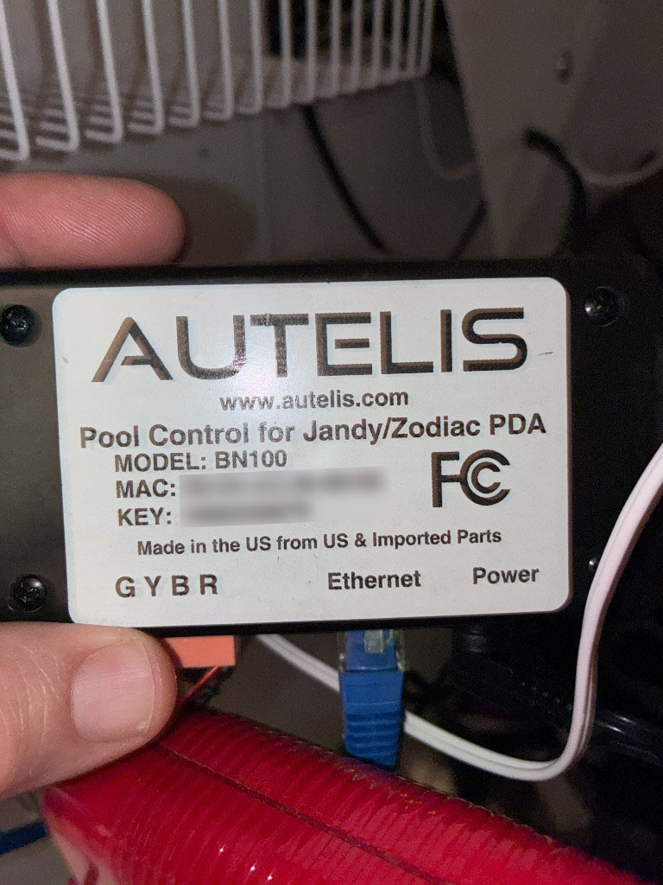

Unofficial developer reference
Field notes for talking to Autelis Pool Control for Jandy/Zodiac PDA
over HTTP. This product emulates a Jandy PDA remote on the RS‑485 bus and exposes
a web keypad — not the richer status.xml circuit API used by Autelis RS units.
The unit documented here is labeled Pool Control for Jandy/Zodiac PDA, model BN100. It connects to the pool panel with a 4-conductor RS‑485 lead (terminal block marked GYBR), Ethernet for LAN access, and a separate power input.

| Field | Value (this unit) |
|---|---|
| Product | Pool Control for Jandy/Zodiac PDA |
| Model | BN100 |
| Vendor site | www.autelis.com (historical; product line discontinued) |
| Example MAC | 00:04:A3:39:89:02 |
| Panel link | RS‑485 via GYBR terminal (4-lead wire to Jandy/Zodiac PDA bus) |
| Network | Ethernet (HTTP, typically port 80) |
Why this matters: community integrations (openHAB, Home Assistant, etc.) mostly target Autelis RS / Pool Control firmware with equipment channels in status.xml. The PDA SKU behaves differently: the useful automation surface is the keypad emulator.
Intelligence lives in the Jandy/Zodiac outdoor control panel. The physical PDA (and this Autelis) is a dumb terminal: it receives display updates and may return a single keypress on each bus cycle. Autelis bridges that RS‑485 conversation to HTTP so a browser or app can act as the remote.
iOS / browser / script
│ HTTP (Basic Auth)
▼
Autelis BN100 ──Ethernet──► LAN / WAN
│
│ RS-485 (GYBR, 4-lead)
▼
Jandy / Zodiac Aqualink panel
│
└── pumps, heaters, auxiliaries, menus, …
Observed Autelis web UI version on System Information: 1.0.2.
PDA firmware string seen on splash: PPD: PDA 2.6.1.
| BN100 PDA (this doc) | Typical Autelis RS / Pool Control | |
|---|---|---|
| Role | Emulates AquaPalm / PDA remote | Exposes named circuits, temps, pumps, chem |
| Primary API | /keypad.xml + /keypad.cgi |
/status.xml, /names.xml, /set.cgi, … |
| Web UI | keypad.htm, systeminfo.htm, settings.htm |
Dashboard-style equipment pages |
status.xml |
Often minimal (e.g. version only) | Full system / equipment / temp tree |
| Control model | Navigate menus with Up/Down/Select/Back | Direct on/off and setpoints by name |
401 Unauthorized: Password required without credentials).admin / admin; change them. Do not embed real passwords in published clients.Authorization: Basic base64(username:password)| Path | Purpose |
|---|---|
/systeminfo.htm | System information (includes Autelis version string) |
/settings.htm | Device settings |
/keypad.htm | PDA keypad UI (source of truth for this API) |
/ajax.js | Shared XHR helper (gzip-compressed on device) |
/autelis.css, /autelis.png | Static assets |
GET /keypad.xml — LCD snapshot
Returns the current emulated PDA display. The stock UI polls this about every
100 ms when awake (slower in sleep). Pass the document element of the
XML response into your parser (same as updateKeypad(xmlData) in keypad.htm).
<response>
<b0> SUN 4:07PM</b0>
<b1>AIR POOL</b1>
<b2> 93` 85` </b2>
<b3></b3>
<b4>POOL MODE ON</b4>
<b5>POOL HEATER OFF</b5>
<b6>SPA MODE OFF</b6>
<b7>SPA HEATER OFF</b7>
<b8>MENU </b8>
<b9>EQUIPMENT ON/OFF</b9>
<b10></b10>
<b11></b11>
<hll>4</hll>
<effects>15,13,15,0</effects>
<offset>0,0,0</offset>
<sleep>0</sleep>
</response>| Element | Meaning |
|---|---|
b0 … b11 |
Text buffer lines. The web UI shows 10 visible rows (kptxt0–kptxt9), optionally remapped via offset. |
hll |
Highlighted line index for the visible screen. Values ≥ 10 (often 15) mean “no highlight” (splash / idle). |
effects |
Comma list: line,start,end,style. Style 1 = background emphasis; 4 = underline (per keypad.htm). Ignored when indices are out of range. |
offset |
Comma list: shift,start,end. When shift > 0, visible rows in [start,end] read from buffer index i + shift with wrap inside that window (scroll region). |
sleep |
1 = sleep mode (show “SLEEP MODE / Press a key…”); 0 = awake. |
keypad.htm skips updates when xmlData.childNodes.length < 15, then retries
after 50 ms (1 s while sleeping). Clients should keep the last good frame instead of
blanking the UI on short/partial documents.
The web UI remaps buffer glyphs before display:
| Raw | Shown as |
|---|---|
_ | ↓ |
^ | ↑ |
` (backtick) | ° |
> or } | → |
{ | ← |
GET /keypad.cgi?key=N — keypress
Injects a PDA key into the Autelis→panel conversation. The stock UI calls this from
doButton(num) and does not wait for a new screen; continuous
/keypad.xml polling picks up the result.
Successful responses are a tiny body (observed: literal 1).
| key= | UI label | Notes |
|---|---|---|
0 | (power / unload) | Sent from window.onbeforeunload as doPower() |
1 | 1 | Soft key |
2 | Back | |
3 | 2 | Soft key |
4 | Select | Also keyboard Enter / Space / → |
5 | Dn | Down |
6 | Up | Up |
GET /keypad.cgi?key=6×tamp=1710000000000
Authorization: Basic …One key per bus cycle. The panel handshake is on the order of ~1 Hz. Sending Up/Down faster than that drops presses — symptoms: highlight moves once, then appears stuck. Pace keys ≈ 0.8–1.0 s apart (or queue/coalesce navigation).
GET /status.xml (limited on PDA)
Present and authenticated, but on BN100 PDA firmware it may only expose a thin
system tree (commonly just a version such as 1.0.2). Do not assume
RS-style equipment / temp channels exist.
Related RS-oriented endpoints (/names.xml, /pumps.xml, /chem.xml,
/set.cgi) are not the primary control path for this SKU and may 404 or be empty.
ajax.js conventions (important for clients)The device ships a small XHR helper. Two behaviors matter for third-party clients:
timestamp=<epochMillis> (using ? or & as needed).
Without this, proxies or URLSession caching can freeze keypad.xml
after the first frame.
// Equivalent cache-buster
url += (url.includes('=') ? '&' : '?') + 'timestamp=' + Date.now()Also set Cache-Control: no-cache / use an ephemeral URL session where possible.
Do
• Poll /keypad.xml ~100–250 ms when awake
• Pace keypresses ~1 s
• Always add timestamp=
• Keep last good LCD if a frame looks incomplete
• Send key=0 when tearing down a session (optional, matches browser unload)
Avoid
• Bursting Up/Down without delay
• Interleaving many parallel GETs on tiny firmware
• Assuming RS /set.cgi?name=circuit… semantics
• Publishing credentials or open WAN admin/admin
curl -u 'USER:PASS' \
"http://AUTELIS_HOST/keypad.xml?timestamp=$(date +%s000)"curl -u 'USER:PASS' \
"http://AUTELIS_HOST/keypad.cgi?key=4×tamp=$(date +%s000)"connect with Basic Auth
loop every 200ms:
GET /keypad.xml?timestamp=now
if sleep == 1: show sleep UI; continue
if childCount < 15: keep previous frame; continue
render b0..b9 with offset + hll + effects
onKey(code):
wait until ≥900ms since last key
GET /keypad.cgi?key=code×tamp=now
# do not require an immediate xml refresh; next poll updates LCDkeypad.htm / ajax.js. Autelis no longer publishes a maintained PDA command manual.1 / 2 are context-dependent (menu-defined).